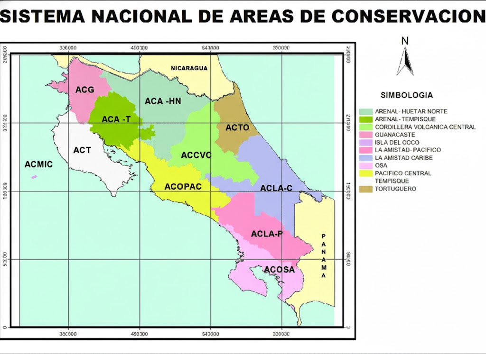

SINAC
Inicio
Nosotros
Áreas de Conservación
Ver Todas las Áreas
Arenal Huetar Norte
Arenal Tempisque
Cordillera Volcánica Central
Guanacaste
La Amistad Caribe
La Amistad Pacífico
Isla del Coco
Osa
Pacífico Central
Tempisque
Tortuguero
Trámites y Servicios
Noticias
Iniciar Sesión
Cerrar Sesión
Buscar
Áreas de Conservación - SINAC

Seleccione el Área de Conservación y luego presione Buscar
ACAHN – Arenal Huetar Norte
ACAT – Arenal Tempisque
ACCVC – Cordillera Volcánica Central
ACG – Guanacaste
ACLAC – La Amistad Caribe
ACLAP – La Amistad Pacífico
ACMIC – Isla del Coco
ACOPAC – Pacífico Central
ACOSA – Osa
ACT – Tempisque
ACTO – Tortuguero
Buscar
Descargar Información